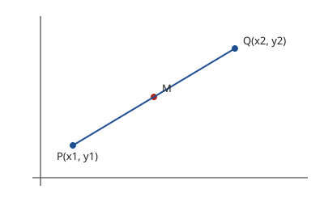

Based on Cambridge International AS & A Level Mathematics: Pure Mathematics 1 Coursebook (Sue Pemberton), Chapter 3, printed pp.72–75 (the length of a line segment and the midpoint). Printed pages were read from P1.pdf (printed 72–75 = PDF 84–87). Own wording and new numbers. Teaching stops before 3.2 Parallel and perpendicular lines, which continues on printed p.75.
Key words: length of a line segment, midpoint
The length of a line segment joining \(P(x_1,y_1)\) and \(Q(x_2,y_2)\) is \(\sqrt{(x_2-x_1)^2+(y_2-y_1)^2}\). The midpoint of that segment is \(\left(\dfrac{x_1+x_2}{2},\dfrac{y_1+y_2}{2}\right)\).

Book: Key point 3.1 style, printed pp.72–75. New numbers.
Find the length of the line segment joining \(A(0, 0)\) and \(B(6, 8)\).
Book: midpoint of a segment, printed pp.72–75. New numbers.
Find the midpoint of the line segment joining \(A(0, 0)\) and \(B(6, 8)\).
Find the length of the line segment joining \(A(0, 0)\) and \(B(6, 8)\).
\(10\)
The midpoint of the segment joining \(A(0, 0)\) and \(B(6, 8)\) is \((3, 4)\). What is the \(x\)-coordinate of the midpoint?
\(3\)
Find the length of the line segment joining \(A(0, 0)\) and \(B(9, 12)\).
\(15\)
9709/13/M/J/15 Question 7(i) only, 3 marks. Official QP and MS. Part (ii) is in P1-3.2.
The point \(A\) has coordinates \((p, 1)\) and the point \(B\) has coordinates \((9, 3p + 1)\), where \(p\) is a constant.
(i) For the case where the distance \(AB\) is 13 units, find the possible values of \(p\). [3]